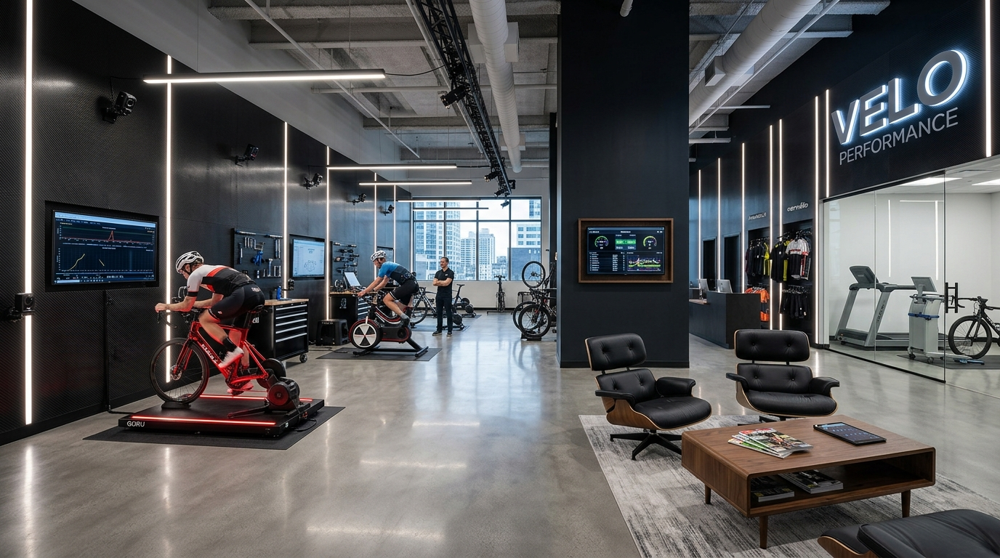
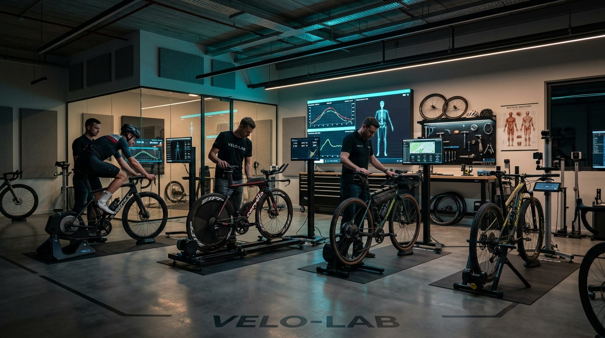

The Science of Frictionless Human Velocity
VELOMETRIC™ was established in 2021 by licensed physical therapists, sports biomechanists, and aerodynamic engineers who recognized that bicycle fitting was trapped in obsolete static approximations—relying on eye estimations and static plumb lines.
We engineered a clinical, medical-grade biomechanics laboratory where every millimeter is validated through synchronized 240Hz infrared motion capture, 64-sensor tactile pressure arrays, and continuous VO2 metabolic gas telemetry.

Our 4-Phase Diagnostic & Kinetic Methodology
We evaluate the cyclist as a dynamic biological kinetic chain, not a stationary machine. Every adjustment is governed by joint angle physics, muscular recruitment paths, and interface pressure sensors.
Physical & Mobility Screening
A 45-minute clinical musculoskeletal assessment off the bike. We test hamstring, psoas, and hip flexibility, identify pelvic rotation asymmetries, measure functional vs. anatomical leg length discrepancies, and inspect foot arch stiffness under load.
3D Infrared Motion Capture
With 16 active LED markers placed over key anatomical landmarks, 240Hz infrared optical cameras track joint angles in three dimensions while you pedal under real-world target wattage. We dial knee extension (37°–40° at BDC) and stabilize pelvic tilt.
Tactile Interface Mapping
A wireless 64-sensor GebioMized sleeve records dynamic saddle pressure distribution at 200Hz to eliminate soft-tissue nerve compression. Simultaneously, dual crosshair lasers align shoe cleats and canting shims to ensure true vertical knee tracking.
CAD Specs & 60-Day Road Trial
Cockpit reach, stack risers, and stem angles are locked with digital torque tools. We export a comprehensive CAD blueprint for your mechanics and provide an unconditional 60-day road-testing window with complimentary follow-up tweaks.
Types of Fittings Offered In Our Studio
We provide targeted, specialized fitting protocols calibrated for road racing, gravel adventures, Ironman triathlons, and pre-purchase geometry consultations.
Pro Dynamic 3D Kinematic Fit
Our flagship fitting. 3D optical joint tracking, saddle fore/aft setback, handlebar drop, and brake hood angle calibration to eliminate patellar strain, neck cramping, and hand numbness.
- ✓ Full clinical physical & spine screen
- ✓ 16-point 240Hz infrared motion capture
- ✓ 60-day road fine-tuning guarantee
Aero TT & Triathlon Precision Fit
Engineered for Kona qualifiers and time-trialists. Virtual CdA drag optimization, 10°–15° high-hands aero tuck, stack risers, and pelvic forward rotation while preserving >45° hip angle for the run.
- ✓ Cockpit spacer & extension geometry
- ✓ Diaphragmatic lung breathing clearance
- ✓ Virtual CdA aero drag profiling
Podiatric Cleat & Custom Footbeds
Dual crosshair laser alignment over 1st/5th metatarsal heads, rotational float calibration, custom vacuum-molded carbon-composite insoles, and canting shims to eradicate knee pain and hot spots.
- ✓ Digital caliper shoe profiling
- ✓ Varus/valgus canting shims
- ✓ Custom thermo-molded orthotics
GebioMized® Saddle Pressure Mapping
Using a flexible 64-sensor tactile mat, we visualize dynamic pelvic pressure distribution, pubic ramus loading, and pelvic rotation. We test models from our 40+ test bank to eliminate pudendal numbness.
- ✓ 200Hz live force mapping
- ✓ 40+ loaner test saddles (Specialized, ISM, Selle)
- ✓ 50/50 pelvic symmetry target
Pre-Purchase Frame Geometry CAD
Never buy the wrong frame size again. We determine your ideal Stack, Reach, and Cockpit Coordinates on our motorized fit jig, cross-referencing your body against 1,200+ commercial bicycle geometries.
- ✓ Motorized dynamic sizing jig test
- ✓ 1,200+ global bike database cross-reference
- ✓ Precise stem & spacer blueprint for builder
Indoor Smart Bike & Trainer Fit
Indoor smart bikes (Wahoo KICKR Bike, Stages, Wattbike, Tacx, Peloton) present unique static micro-trauma due to zero lateral sway. We optimize your indoor ergonomics to prevent overuse injuries on Zwift.
- ✓ Fixed-flywheel pelvic compensation
- ✓ Core stabilization for static trainers
- ✓ In-home coordinate replication guide
Bicycles Handled In Our Performance Atelier
Our multi-axis diagnostic rigs, clamp adapters, and direct-drive trainers support every contemporary frame architecture, electronic groupset, and proprietary integrated cockpit.

Aero & Endurance Road Bikes
Specialized Tarmac SL8, Pinarello Dogma, Trek Madone, Cervélo R5, Canyon Aeroad, Colnago V4Rs. We master internal hydraulic hose routing, integrated one-piece cockpits, and electronic Di2/AXS hood setups.
Time Trial & Triathlon Superbikes
Canyon Speedmax CFR, Cervélo P5/PX, Quintana Roo PRsix, Factor Hanzo, Trek Speed Concept. Custom multi-axis aerobar risers, tilt angles, high-hands tucks, and integrated hydration bladder positioning.
Gravel, All-Road & Bikepacking
Specialized Diverge, Open UP/WI.DE, Santa Cruz Stigmata, 3T Exploro, Trek Checkpoint. Flared drops (16°–24° flare), extended wheelbase reach, vibration-absorbing seatpost compliance, and bikepacking bag clearances.
Cross-Country & Trail Mountain Bikes
Scott Spark RC, Specialized Epic, Trek Supercaliber, Santa Cruz Blur. Flat/riser bar sweep, brake lever reach, dropper post travel ergonomics, and suspension sag compensation under real rider weight.
Indoor Smart Bikes & Ergometers
Wahoo KICKR Bike, Stages SB20, Wattbike Atom, Tacx NEO Bike, Peloton. Replicating your outdoor geometry millimeter-by-millimeter onto dedicated indoor training rigs for high-power Zwift and TrainerRoad blocks.
Custom Handbuilt & Bespoke Frames
Moots, Seven Cycles, Mosaic, Independent Fabrication, Firefly. We provide millimeter-precision CAD coordinate charts (stack, reach, seat tube angle, fork rake) directly to custom titanium and carbon framebuilders.
How Our Studio Improves Rider Performance
A precision bike fit is not just about avoiding discomfort—it is the single highest-return performance upgrade in cycling, yielding proven aerodynamic, metabolic, and mechanical power gains.
Sustained Functional Power (FTP)
By dialing knee extension to 37°–40° at bottom dead-center and aligning foot cleats with millimeter precision, we maximize gluteus maximus recruitment and eliminate dead spots throughout 360° of pedal rotation.
Aerodynamic Drag Reduction (CdA)
Over 80% of cycling resistance at race velocity is aerodynamic drag. We optimize head position, arm cup angle, and torso slope to reduce CdA, saving 60 to 120 seconds over a 40km time trial at race effort.
Overuse Injury Eradication
Clinical resolution of chondromalacia patellae (knee pain), pudendal nerve numbness, piriformis sciatica, Achilles tendinopathy, and cervical neck hyperextension, keeping you riding injury-free all season.
Metabolic Oxygen Consumption
Stabilizing pelvic rock and supporting foot arches reduces muscular stabilizer fatigue and cardiac drift. You consume less glycogen and oxygen per watt produced, leaving more energy for the final sprint or run leg.
Master Fitters & Biomechanical Doctors
You are not fitted by retail sales associates. Our practitioners hold doctorate-level sports medicine credentials and international IBFI Level 4 certifications.
Dr. Marcus Vance, DPT
Founder & Chief Biomechanist
Doctor of Physical Therapy specializing in spinal kinetic chains and pelvic tilt kinematics. Former consultant to UCI WorldTour teams with over 14 years of clinical fitting expertise.
Elena Rostova, MSc
Aerodynamics & TT Specialist
Master of Science in Sports Biomechanics & Aerodynamic Modeling. Former Olympic national track cycling medalist specializing in aggressive time-trial cockpit optimization and wind tunnel testing.
Samira Patel, PT
Podiatric & Cleat Biomechanist
Licensed physical therapist focused exclusively on lower-extremity kinetics, custom carbon orthotic fabrication, knee tracking alignment, and foot-pedal interface power transfer.
The San Francisco Biomechanics Lab
A purpose-built 4,500 sq.ft facility engineered specifically for aerodynamic calibration and high-speed motion capture.
3 Dedicated Fitting Bays
Climate-controlled bays equipped with isolated power grids, high-speed shutter lighting, and direct-drive smart trainers.
Orthotics Fabrication Lab
On-site vacuum molding machines, carbon-fiber composite ovens, and precision grinding wheels for instant insole delivery.
Athlete Recovery Lounge
Private changing suites, hot showers, espresso bar, and high-speed secure Wi-Fi for traveling athletes.
Certified By Global Cycling Authorities
We partner with premier equipment manufacturers and academic research centers to maintain cutting-edge scientific validity.
International Bike Fitting Institute Accredited Lab
Certified Master Pressure Mapping Center
Certified 3D Optical Motion Partner
Official Ergometer Calibration Partner